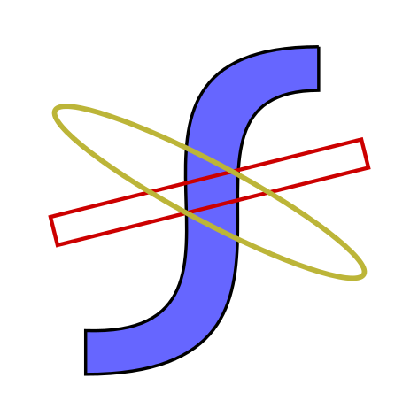

|  |
Flow* Toolbox -
|
This site is created to provide an introduction and availability of a toolbox of Flow* which is a formal verification tool for Cyber-Physical Systems. The first version of Flow* was released in 2013 as command line application that accepts a text file including the definition of the CPS model along with the reachability problem on it. The tool has been updated several times to the latest version 2.1.0.